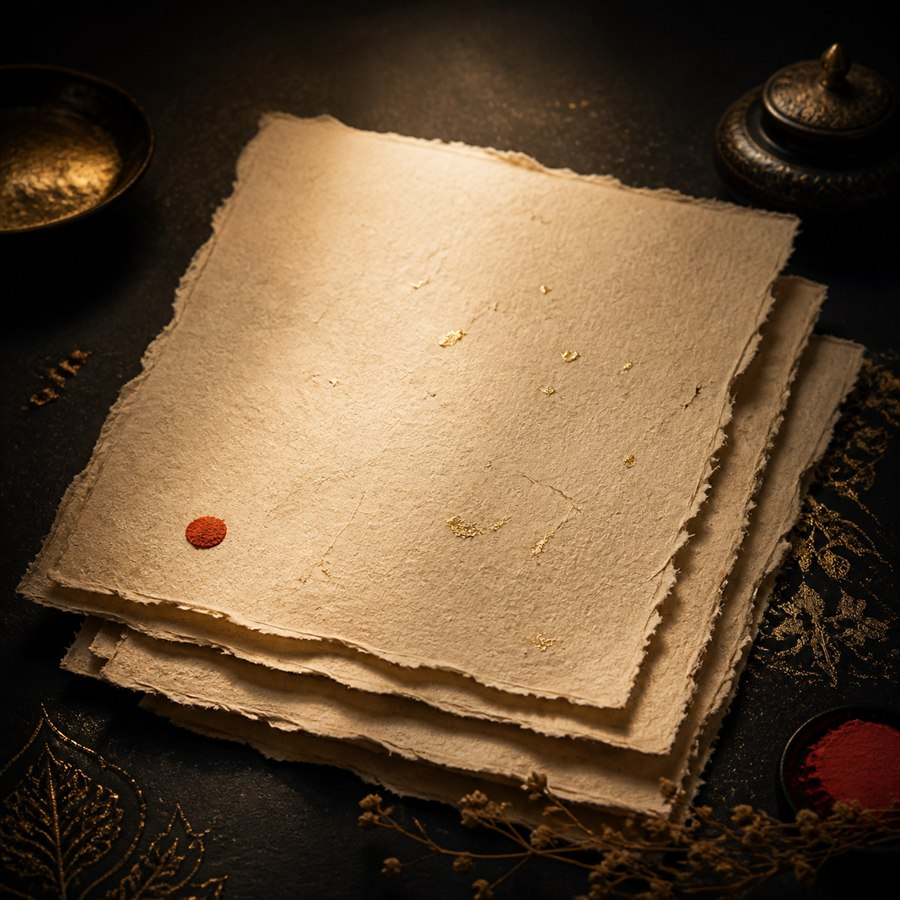
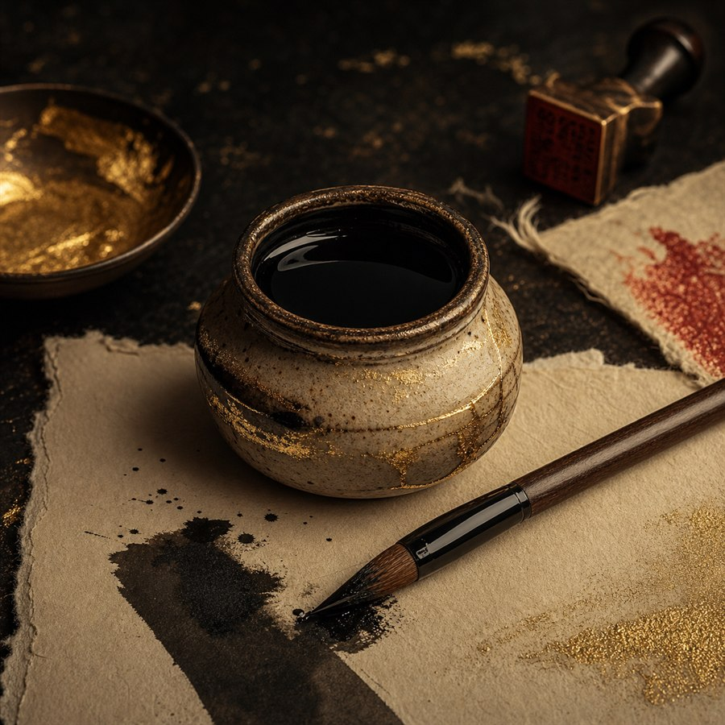
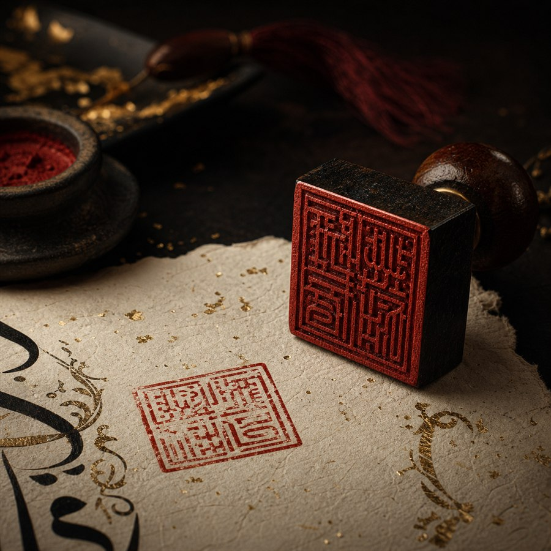
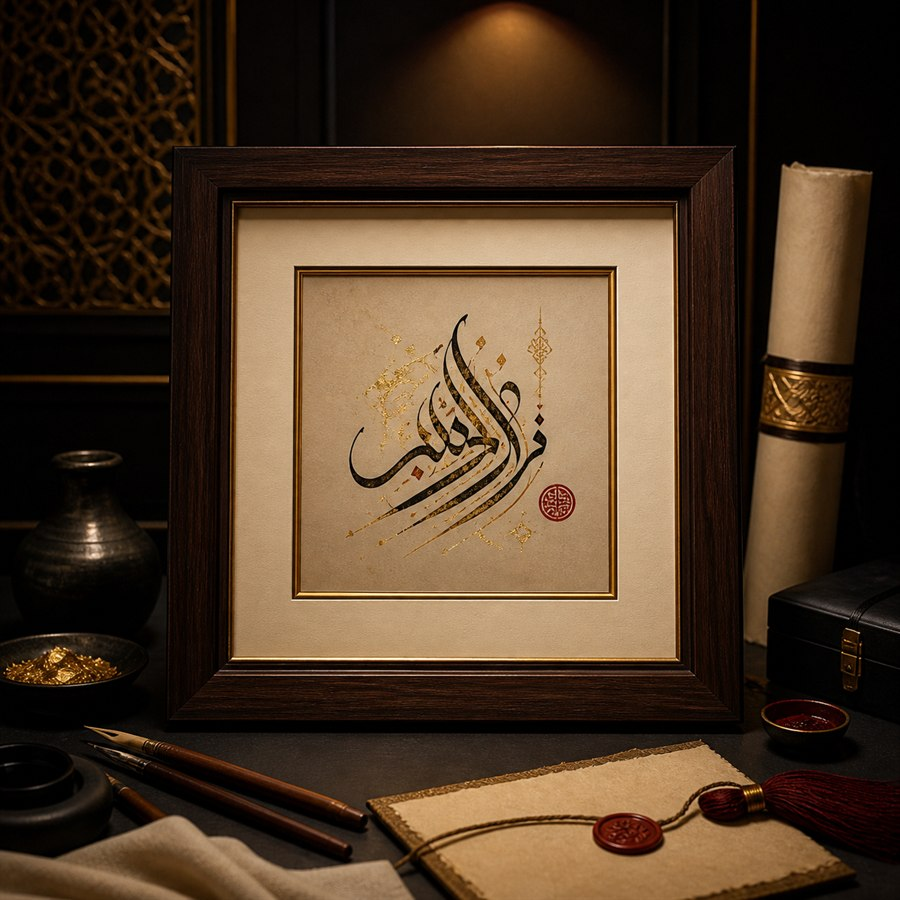

Paper
Warm cotton, handmade washi, or deckled archival stock selected for fiber, tone, and ink absorption.
Ink and paper
Harf-e-Noor works are built from absorbent paper, dense black ink, restrained red marks, and spacing that lets the word breathe.

Warm cotton, handmade washi, or deckled archival stock selected for fiber, tone, and ink absorption.

Deep black ink with occasional gold wash or cinnabar accents. Edges are allowed to feather naturally.

A red studio mark is placed when the work is complete, signed, and ready for collection.

Each work includes spacing and frame guidance so the paper remains visually calm.